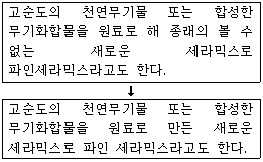
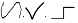
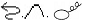
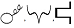
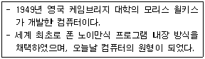
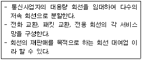
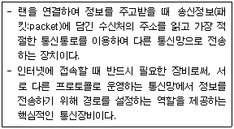

워드프로세서-(구-1급) (2012-09-22 기출문제)
1과목: 워드프로세싱 일반
1. 다음 중 전자출판에서 개체(Object) 처리 기능에 관한 설명으로 적절하지 않은 것은?
- 작성된 내용을 그림이나 동영상으로 변환하여 처리한다.
- 각각의 그림이나 파일을 개별적인 요소로 구분하여 처리한다.
- 클립 아트(Clip Art) 형태의 그림을 사용할 수 있다.
- 여러 가지의 개체들을 서로 연결하거나 분해해서 사용할 수 있다.
(정답률: 51%)

2. 다음 중 메일머지(Mail Merge) 기능에 대한 설명으로 옳은 것은?
- 이름이나 직책, 주소 등만 다르고 나머지 내용은 같은 여러 통의 편지를 쉽게 만들 수 있는 기능이다.
- 다단 편집이나 표, 수식 작성 등을 쉽게 할 수 있는 기능이다.
- 반드시 데이터 파일은 워드프로세서 문서 파일이어야 한다.
- 반드시 데이터 파일에서 메일머지 기능을 실행시켜야 한다.
(정답률: 71%)
3. 문서의 균형을 위해 비워두는 페이지의 상,하,좌,우 공백을 무엇이라고 하는가?
- 각주(Footnote)
- 마진(Margin)
- 옵션(Option)
- 색인(Index)
(정답률: 80%)
4. 다음 중 화면에 표시된 문서나 내용을 그대로 프린터에 출력하는 기능은 ?
- 하드 카피(Hard Copy)
- 소프트 카피(Soft Copy)
- 레이아웃(Layout)
- 블록(Block)
(정답률: 70%)
5. 다음 중 탭(Tab)에 대한 설명으로 옳지 않은 것은?
- 가운데 정렬 탭을 설정하면 그 위치에 있는 낱말의 가운데 부분을 가지런하게 맞춘다.
- 기본적으로 탭 간격은 40pt(영문 8자)로 "오른쪽 탭"이 설정되어 있다.
- 탭의 간격을 임의로 변경할 수 있다.
- 탭 설정은 문단 단위로 기억되어 특별한 영역지정 없이 사용자가 탭 설정을 바꾸면 현재 문단의 탭지정만 바뀐다.
(정답률: 50%)
6. 다음 중 매크로(Macro) 기능에 대한 설명으로 옳지 않은 것은?
- 화면에 표시된 문자나 도형의 정보를 하나의 파일에 저장하는 기능이다.
- 대부분의 워드프로세서에서 사용이 가능하다.
- 동일한 도형이나 문단 형식, 서식 등에는 사용할 수 있다.
- 한 번 설정해 놓은 매크로는 저장되어 있어 다음에도 사용할 수 있다.
(정답률: 52%)
7. 다음 중 작성하는 문서 사이에 주석, 메모, 머리말, 꼬리말 같은 것을 표시하기 위해 별도로 설정하는 영역을 무엇이라 하는가?
- 백업(Backup)
- 로드(Load)
- 보일러 플레이트(Boiler Plate)
- 디렉터리(Directory)
(정답률: 73%)
8. 다음 중 조판기능에 대한 설명으로 옳지 않은 것은?
- 조판 부호는 문서의 각 페이지 위쪽에 고정적으로 들어가는 글이다.
- 각주는 특정 문장이나 단어에 대한 보충 설명들을 해당 페이지의 하단에 표시한다.
- 미주는 문서에 나오는 문구에 대한 보충 설명들을 문서의 맨 마지막에 모아서 표기한다.
- 꼬리말은 문서의 모든 쪽에 항상 동일하게 지정할 수 있다.
(정답률: 56%)
9. 다음 중 기억장치에 대한 설명으로 옳지 않은 것은?
- 연상기억장치(Associative Memory) : 보조기억장치의 입출력 속도를 빠르게 하기 위해 주기억장치의 일부를 보조기억장치처럼 사용하는 것을 의미한다.
- 가상기억장치(Virtual Memory) : 주기억장치의 기억용량의 한계를 극복하기 위해 사용하는 방법으로 보조기억장치 일부를 주기억장치처럼 사용하는 것을 의미한다.
- 레지스터(Register) : 가장 빠른 기억장치로 CPU 내부에서 주소, 명령어, 연산 결과 등을 저장하는 장치이다.
- 캐시기억장치(Cache Memory) : 주로 SRAM을 사용하며 CPU와 주기억장치 사이의 속도차이를 극복하기 위해서 사용한다.
(정답률: 54%)
10. 다음 중 그림을 밝고 명암 대비가 작은 그림으로 바꾸는 것으로 기관의 로고 등을 작성하여 배경으로 희미하게 나타낼 때 사용하는 것을 무엇이라 하는가?
- 워터마크(Watermark)
- 커닝(kerning)
- 리터칭(Retouching)
- 렌더링(Rendering)
(정답률: 73%)
11. 다음 중 목차(차례) 만들기에 대한 설명으로 옳지 않은 것은?
- 목차 만들기의 결과는 꼬리말 영역에 자동으로 만들어진다.
- 제목 목차뿐만 아니라 표 목차, 그림 목차의 구성도 가능하다.
- 주로 문서의 분량이 많을 때 활용되며, 현재 문서에 삽입된 모든 수식에 대하여도 목차 만들기를 할 수 있다.
- 목차를 만들기 위해서는 목차에 포함될 항목을 표시해 두어야 한다.
(정답률: 57%)
12. 다음 중 전자출판에 사용되는 용어에 관한 설명으로 옳은 것은?
- 오버프린트(Over Print) : 사진이나 그래픽 이미지를 문서의 바탕에 투명하게 한번 인쇄하는 것을 의미한다.
- 스프레드(Spread) : 대상체의 컬러가 배경색의 컬러보다 옅어서 대상체가 보이지 않는 현상이다.
- 모핑(Morphing) : 기존의 그림을 다른 형태로 새롭게 채도, 조명도, 명암 등을 조절하는 작업을 의미한다.
- 하프톤(Halftone) : 제한된 색상을 조합하거나 각 점의 크기나 명암을 달리하여 영상을 표시한다.
(정답률: 62%)
13. 다음 중 결재권자가 휴가 출장 등의 사유로 결재할 수 없을 때 그 직무를 대신하는 자가 결재하는 것은?
- 전결
- 정규결재
- 대결
- 후결
(정답률: 74%)
14. 다음 중 공문서 작성 시 내용을 여러 가지 항목으로 구분할 때 첫 째 항목의 구분방법은?
- 1), 2), 3), …
- 가, 나, 다, …
- (1), (2), (3), …
- 1., 2., 3., …
(정답률: 71%)
15. 다음 중 한글 코드에 대한 설명으로 옳지 않은 것은?
- KS X 1001 완성형 한글코드는 정보 교환용으로 코드가 없는 문자는 사용할 수 없다.
- KS X 1001 조합형 한글코드는 한글의 대부분을 표현할 수 있으며 정보 교환할 때 충돌이 발생할 수 있다.
- KS X 1001 완성형 한글코드는 모든 문자를 2Byte로 표현한다.
- KS X 10⑤-1 유니 코드는 다른 한글 코드에 비해 기억장소를 많이 차지하며 국제 표준 코드로 사용된다.
(정답률: 62%)
16. 다음 중 워드프로세서의 기능을 수행하는 장치에 대한 설명으로 옳지 않은 것은?
- 입력 장치에는 디지타이저, 태블릿, DDR3 SDRAM 등이 있다.
- 표시 장치에는 LCD, CRT, PDP 등이 있다.
- 출력 장치에는 프린터, 마이크로 필름 장치(COM), 플로터 등이 있다.
- 저장 장치에는 USB 메모리, 하드디스크, DVD 등이 있다.
(정답률: 57%)
17. 다음 중 행정기관이 일정한 사항을 기록하여 행정기관 내부에 비치하면서 업무에 활용하는 대장, 카드 등의 문서를 무엇이라고 하는가 ?
- 법규문서
- 비치문서
- 지시문서
- 민원문서
(정답률: 74%)
18. 다음 중 소트(sort)에 대한 설명으로 옳지 않은 것은?
- 한번 정렬된 내용을 오름차순, 혹은 내림차순으로 재배열 할 수 없다.
- 작은 것부터 큰 순서대로 정렬하는 것을 오름차순 정렬이라고 한다.
- 오름차순은 숫자, 영문자, 한글 순으로 정렬된다.
- 큰 것부터 작은 순서대로 정렬하는 것은 내림차순 정렬이라고 한다.
(정답률: 70%)
19. 다음과 같이 문장이 수정되었을 때 사용된 교정부호를 모두 올바르게 짝지은 것은?


(정답률: 71%)
20. 다음 중 문서의 분량이 감소할 수 있는 교정부호들로 올바르게 짝지어진 것은?


(정답률: 79%)
2과목: PC 운영 체제
21. 다음 중 한글 Windows XP의 [시스템 도구]에 있는 [디스크 조각 모음]에 대한 설명으로 가장 옳은 것은?
- [디스크 조각 모음]을 실행한 후에 파일의 액세스 속도가 느려지지만 안정성은 향상된다.
- 디스크 조각을 모으는 동안 다른 작업을 수행 할 수 없다.
- [디스크 조각 모음]의 수행시간은 볼륨 크기, 볼륨에 있는 파일의 수와 크기, 조각난 양, 사용 가능한 로컬시스템 리소스를 포함한 다양한 요소에 따라 달라진다.
- [디스크 조각 모음]의 실행은 NTFS 파일 시스템으로 포맷된 볼륨에서만 가능하다.
(정답률: 58%)
22. 다음 중 한글 Windows XP에서 폴더나 파일의 특징에 관한 설명으로 옳지 않은 것은?
- 폴더 창에서 파일과 폴더는 이름, 크기, 종류, 날짜순으로 정렬할 수 있다.
- 파일과 폴더는 수정한 날짜, 크기, 특성을 포함하는 정보를 갖는다.
- [Windows 탐색기] 창에서 파일이나 폴더를 선택하면 상태 표시줄에 세부정보가 표시된다.
- [Windows 탐색기] 창에서 폴더에 마우스 포인터를 올리면 폴더의 위치정보를 확인할 수 있다.
(정답률: 42%)
23. 한글 Windows XP의 [검색 결과] 창에서 파일 또는 폴더를 검색하는 방법으로 옳지 않은 것은?
- 찾고자 하는 파일 또는 폴더가 휴지통에 있는 경우에도 검색할 수 있다.
- 날짜를 입력하여 최근에 완전히 삭제한 파일들을 찾을 수 있다.
- 찾고자 하는 파일 유형을 선택하여 검색할 수 있다.
- 찾고자 하는 파일 또는 폴더의 이름을 대/소문자로 구분하여 찾아 준다.
(정답률: 57%)
24. 한글 Windows XP의 시스템 도구인 [시스템 복원] 창에 관한 설명으로 가장 옳은 것은?
- 시스템을 복원하면 데이터의 입출력 속도가 향상되고 디스크 공간이 늘어난다.
- 하드 디스크의 파일 시스템에 관한 오류를 검출하고 미사용 파일을 제거하여 시스템을 복원 할 수 있다.
- MS-DOS 시동 디스크를 사용하여 시스템을 재부팅한 후에 시스템 복원을 할 수 있도록 한다.
- 저장한 문서, 즐겨찾기 등의 최근에 작업한 내용을 손상 시키지 않고 시스템의 설정과 성능을 이전 시점으로 복원한다.
(정답률: 40%)
25. 다음 중 한글 Windows XP의 [폴더 옵션] 창에 있는 [일반] 탭에서 할 수 있는 작업으로 옳지 않은 것은?
- 폴더에 일반 작업을 표시하도록 설정할 수 있다.
- 같은 창에서 폴더 열기를 설정할 수 있다.
- 숨겨진 파일을 보이게 설정할 수 있다.
- 마우스 한 번 클릭으로 열기를 설정할 수 있다.
(정답률: 41%)
26. 다음 중 한글 Windows XP의 [그림판] 프로그램의 기능에 관한 설명으로 옳지 않은 것은?
- 비트맵(.bmp) 파일로 저장할 수 있는 흑백 또는 컬러 그림을 그릴 때 사용할 수 있는 그리기 도구이다.
- [그림판]으로 그린 그림을 바탕화면의 배경으로 사용할 수 있다.
- 레이어(Layer) 기능을 사용할 수 있다.
- 전자 메일을 사용하여 이미지 보내기를 할 수 있다.
(정답률: 64%)
27. 다음 중 한글 Windows XP의 [Windows 탐색기]에서 COMMAND.COM파일이 COMMAND라고만 표시되어 있다. 파일의 확장자가 보이게 표시하려면 어떻게 해야 하는가?
- 주메뉴[도구]의 [폴더 옵션]-[보기] 탭에서 알려진 파일 형식의 파일 확장명 숨기기에 관한 옵션을 해제한다.
- 주메뉴 [보기]의 [폴더옵션]-[파일형식] 탭에서 알려진 파일형식 등록하기를 선택한다.
- 해당 폴더의 등록정보 창에서 파일 확장명 보이기를 체크한다.
- COMMAND 파일을 찾아서 파일명을 COMMAND.COM으로 바꾼다.
(정답률: 43%)
28. 한글 Windows XP에서 새로운 하드웨어 추가와 관련된 설명으로 옳지 않은 것은?
- 한글 Windows XP는 새로운 하드웨어 설치를 손쉽게 해주는 PnP 기능을 지원한다.
- 새로운 하드웨어를 추가하려면 [제어판]에 있는 [새 하드웨어 추가]를 선택하여 지시 사항대로 설정한다.
- PnP 기능을 지원하지 않는 하드웨어의 설치는 [하드웨어 추가 마법사]에서 자동적으로 이루어진다.
- 새로운 하드웨어 추가 시 PnP 기능을 지원하는 장치인 경우에는 검색한 하드웨어의 설정 값을 자동으로 지정하고 해당 드라이버를 설치한다.
(정답률: 54%)
29. 다음 중 한글 Windows XP의 [보조프로그램]에 있는 [메모장] 프로그램으로 할 수 없는 기능은?
- 텍스트(TXT)형식의 문서만을 열 수 있다.
- 웹페이지 제작을 위한 간단한 편집도구로 사용할 수 있다.
- 레이어 기능을 사용할 수 있다.
- 글꼴의 종류 및 크기를 변경할 수 있다.
(정답률: 55%)
30. 다음 중에서 한글 Windows XP의 [도움말 및 지원 센터] 창에 관한 설명으로 옳지 않은 것은?
- [시작] 메뉴에서 [도움말 및 지원]을 선택하여 표시할 수 있다.
- 키워드를 입력하여 해당 도움말의 검색이 가능하다.
- 색인을 통한 도움말의 검색이 가능하다.
- 검색된 도움말을 수정하거나 추가 및 삭제가 가능하다.
(정답률: 63%)
31. 다음 중 한글 Windows XP에서 할 수 있는 작업으로 옳지 않은 것은?
- Windows XP와 호환되는 하드웨어 및 소프트웨어를 찾을 수 있다.
- 시스템 도구를 사용하여 컴퓨터 정보를 확인할 수 있으며 문제를 진단할 수 있다.
- 시스템 복원을 이용하여 이전에 삭제한 모든 파일을 복원할 수 있다.
- Windows Update를 사용하여 Windows를 최신정보로 유지할 수 있다.
(정답률: 59%)
32. 다음 중 한글 Windows XP에서 네트워크 연결을 위한 구성 요소인 서비스에 관한 설명으로 옳은 것은?
- 사용자가 연결하는 네트워크에 있는 컴퓨터나 파일 엑세스를 지원한다.
- 파일이나 프린터 공유 같은 기능을 제공한다.
- 사용자 컴퓨터가 다른 컴퓨터와 통신할 때 사용하는 언어이다.
- 네트워크를 연결하기 위한 하드웨어이다.
(정답률: 33%)
33. 다음 중 한글 Windows XP에서 새로운 프린터의 추가에 관한 설명으로 옳지 않은 것은?
- [프린터 추가 마법사]를 이용하여 새로운 프린터를 추가하는 과정에서 설치할 프린터를 기본 프린터로 지정할 수 있다.
- 하나의 시스템에 설치할 수 있는 프린터의 수는 10대까지 가능하다.
- 추가할 프린터는 연결 상태에 따라 로컬 프린터와 네트워크 프린터로 구분된다.
- [프린터 및 팩스] 창에서 [파일]-[프린터 추가] 메뉴를 선택하면 [프린터 추가 마법사]를 수행할 수 있다.
(정답률: 60%)
34. 한글 Windows XP의 [Windows 작업 관리자] 창에서 할 수 있는 작업으로 옳지 않은 것은?
- 해당 프로그램의 작업 끝내기
- 해당 프로그램의 삭제
- 시스템 종료
- 새 작업으로 새로운 프로그램의 실행
(정답률: 46%)
35. 다음 중 한글 Windows XP의 [검색 결과] 창에서 [검색 도우미] 창을 사용하여 검색할 때 가능한 검색 아이템으로 옳지 않은 것은?
- 그림, 음악 또는 비디오
- 문서 (워드프로세서, 스프레드시트 등)
- 컴퓨터 또는 사람
- 마우스 또는 키보드
(정답률: 41%)
36. 다음 중 한글 Windows XP에서 [시스템 등록 정보] 창을 이용하여 할 수 있는 작업으로 옳지 않은 것은?
- 컴퓨터 이름이나 작업 그룹 등을 확인하고 변경할 수 있다.
- 시스템 복원의 사용 여부 및 시스템 복원에 사용할 디스크 공간의 크기 비율을 설정할 수 있다.
- 다른 컴퓨터에서 작업할 때 사용자의 컴퓨터에서 실행 중인 Windows 세션에 액세스할 수 있도록 원격 데스크톱의 사용자를 지정할 수 있다.
- Windows 시스템의 자동 업데이트와 다른 컴퓨터와 게임컨트롤러를 구성하도록 방화벽을 설정할 수 있다.
(정답률: 40%)
37. 한글 Windows XP의 [인터넷 프로토콜(TCP/IP) 등록정보]창에서 설정하는 [서브넷 마스크]에 관한 설명으로 옳은 것은 ?
- IP 주소로 DNS 이름을 확인하는데 사용한다.
- 별개의 IP 네트워크 세그먼트를 연결하는 라우터이다.
- IP 주소와 결합하여 사용자 컴퓨터가 속한 네트워크 세그먼트를 식별하는데 사용한다.
- 네트워크 액세스 서버로부터 동적으로 IP 주소를 지정한다.
(정답률: 44%)
38. 한글 Windows XP에서 하드 디스크의 NTFS 압축에 관한 설명으로 옳지 않은 것은?
- NTFS 압축을 사용하여 개별 파일과 폴더 이외에도 NTFS 드라이브 전체를 압축할 수 있다.
- 폴더의 내용을 압축하지 않으면서 폴더를 압축할 수 있다.
- NTFS 압축 파일은 암호화할 수 있다.
- NTFS 압축 파일로 작업할 때 성능이 저하될 수 있다.
(정답률: 23%)
39. 한글 Windows XP에서 네트워크 드라이브에 관한 설명으로 옳지 않은 것은?
- [내 컴퓨터] 창의 [도구] 주메뉴의 [네트워크 드라이브 연결]을 선택하면 [네트워크 드라이브 연결] 창이 활성화 된다.
- [네트워크 드라이브 연결] 창에서 해당 서버와 원하는 컴퓨터나 폴더의 공유 이름은 ‘\\servername\sharename’형식으로 입력한다.
- 로그온할 때마다 연결된 드라이브에 다시 연결하도록 설정할 수 있다.
- 네트워크 드라이브는 하드 드라이브 및 이동식 저장소 장치와 같은 로컬 드라이브처럼 A부터 Z까지 지정된다.
(정답률: 45%)
40. 한글 Windows XP의 [제어판]에 있는 [글꼴]에 대한 설명으로 옳지 않은 것은?
- [제어판]의 [글꼴] 아이콘을 실행하여 표시되는 [글꼴] 창에서 글꼴을 설치 또는 삭제할 수 있다.
- Windows XP 환경에서는 윤곽선 글꼴, 벡터 글꼴 등을 사용한다.
- Windows XP 환경에서 사용되는 글꼴 파일은 C:\Windows\Fonts 폴더에 설치되어 있다.
- [보조프로그램]의 [사용자 정의 문자 편집기]를 사용하면, 설치된 글꼴의 크기 조절, 회전, 색상을 설정할 수 있다.
(정답률: 43%)
3과목: 컴퓨터 및 정보활용
41. 다음 중 데이터의 전송과정에서 발생하는 오류를 검사하기 위해 사용되는 여분의 비트를 무엇이라고 하는가?
- 정지 비트(Stop Bit)
- 패리티 비트(Parity Bit)
- 데이터 비트(Data Bit)
- 복사 비트(Copy Bit)
(정답률: 63%)
42. 다음 중 부팅시 화면에 아무것도 표시되지 않고 "~삐"하는 경고음만 날 경우 점검해야 할 사항과 거리가 먼 것은?
- 램에 이물질이 들어가지 않았는지 확인한다.
- CPU가 제대로 꽂혀 있는지 확인한다.
- 과전압이 흐르고 있는지 확인한다.
- VGA 카드에 이상이 있는지 확인한다.
(정답률: 55%)
43. 디지털 컴퓨터(Digital Computer)에 대한 설명 중 잘못된 것은?
- 2진수를 사용한다.
- 숫자, 문자 등으로 결과를 출력한다.
- 연속적인 양의 표현이 불가능하다.
- 기억 능력과 프로그램이 필요없다.
(정답률: 55%)
44. 다음 보기의 내용은 어떤 컴퓨터에 대한 설명인가?

- UNIVAC
- EDVAC
- ENIAC
- EDSAC
(정답률: 41%)
45. 자기 디스크 장치에서 읽기/쓰기 헤드를 접근하려는 트랙(실린더)내에서 지정한 섹터에 위치시키는데 걸리는 시간은 무엇인가?
- 액세스 시간 (Access time)
- 회전 지연 시간 (Rotational latency time)
- 탐색 시간 (Seek time)
- 전송 시간 (Transfer time)
(정답률: 38%)
46. 데이터베이스에서 현실 세계의 개념적 표현으로 개체-관계 모델(E-R Model)을 사용한다. 다음 중 E-R 모델에서 개체간의 관계를 나타낼 때 사용하는 기호는 어느 것인가?
- 사각형
- 마름모(다이아몬드)
- 타원
- 선
(정답률: 55%)
47. 기업이나 학교내의 일부 또는 전체 컴퓨터에서 특정 소프트웨어를 사용할 수 있도록 사용권리를 주는 소프트웨어 판매 방식을 무엇이라고 하는가?
- 다중사용 라이센스
- 단독사용 라이센스
- 독점 라이센스
- 사이트 라이센스
(정답률: 35%)
48. 다음 중 모바일 단말기에서 3D 그래픽을 활용하기 위해서 필요로 하는 요건으로 옳지 않은 것은?
- 위치기반 서비스(LBS)가 이루어져야 한다.
- 제한된 환경에서 사용될 수 있는 모바일 전용의 3D 그래픽 엔진이 필요하다.
- 모바일 3D 그래픽을 표현하기 위한 표준 API가 필요하다.
- PC 수준의 그래픽 처리 능력을 갖추려면 저전력 특성이 있는 그래픽스 가속칩이 개발되어야 한다.
(정답률: 46%)
49. 다음 중 멀티미디어의 특징에 대한 설명으로 올바르지 않은 것은?
- 디지털화 : 멀티미디어 정보를 컴퓨터로 처리하기 위해서 디지털 방식으로 변환
- 쌍방향성 : 사용자 간에 서로 연결되어 정보 전달을 최소화하는 효과
- 비선형성 : 사용자의 선택에 따라 다양한 데이터로 처리하는 비선형 구조
- 통합성 : 텍스트, 그래픽, 오디오, 비디오, 애니메이션 등 여러 매체를 광범위하게 통합
(정답률: 49%)
50. 검은 종이를 접거나 오려서 캐릭터와 배경의 형태를 만든 후 조명을 비추어 이것의 변화에 따라 순서대로 배열해서 촬영하는 애니메이션 기법은 어느 것인가?
- 셀 애니메이션
- 종이 애니메이션
- 실루엣 애니메이션
- 인형모델 애니메이션
(정답률: 63%)
51. 다음 중 웹 보안 프로토콜이 아닌 것은?
- SHTTP
- SSL
- SEA
- SZS
(정답률: 46%)
52. 다음 중 컴퓨터 시스템의 출력장치로 옳지 않은 것은?
- 액정표시장치(LCD)
- 음극선관(CRT)
- 트랙볼(Trackball)
- 프린터(Printer)
(정답률: 51%)
53. 데이터 통신망에서 사용하는 전송 속도의 단위로 1초 동안에 전송할 수 있는 비트의 수를 무엇이라 하는가?
- dpi
- MIPS
- MHz
- bps
(정답률: 57%)
54. 다음 중 CMOS 설정에 대한 설명으로 옳지 않은 것은?
- CMOS 설정 항목을 잘못 변경하면 부팅이 되지 않을 수도 있다.
- CMOS 설정 프로그램은 하드디스크에 파일 형태로 저장되어 있다가 실행된다.
- CMOS 설정에서 변경된 내용은 시스템의 전원이 공급되지 않는 상태에서도 계속 저장되어 부팅할 때 사용된다.
- 메모리나 하드디스크를 바꾸면 CMOS 설정 정보도 변경된다.
(정답률: 25%)
55. 다음의 설명에 해당하는 데이터 통신망을 무엇이라 하는가?

- 종합 통신망(ISDN)
- 부가가치 통신망(VAN)
- 광대역 통신망(WAN)
- 광대역 종합통신망(B-ISDN)
(정답률: 45%)
56. 다음 중 암호화기술에 대한 설명으로 옳지 않은 것은 ?
- 암호화기술은 공개키 방식과 비밀키 방식이 있다.
- 암호문을 평문으로 바꾸는 것을 복호화라 한다.
- 암호화 알고리즘은 수학의 정수론을 많이 활용한다.
- 대표적 암호화 알고리즘은 IRC와 SET가 있다.
(정답률: 43%)
57. 다음 중 인터넷 보안을 위한 조건으로 거리가 먼 것은?
- 가용성
- 기밀성
- 무결성
- 상속성
(정답률: 60%)
58. 다음 중 컴퓨터의 기본 장치인 주기억 장치에 대한 설명으로 옳지 않은 것은?
- 자료가 있는 주소에 새로운 자료가 들어오면 기존의 자료는 그 다음 주소로 저장된다.
- 주기억 장치에 사용되는 기억 매체는 주로 RAM을 사용한다.
- 주기억 장치의 각 위치는 주소(Address)에 의해 표시된다.
- 주기억 장치는 처리 중인 프로그램과 데이터 그리고 중간처리결과를 보관한다.
(정답률: 35%)
59. 다음 중 데이터베이스의 장점으로 옳지 않은 것은?
- 무결성
- 통합된 자료
- 복잡도 증가
- 중복성 감소
(정답률: 67%)
60. 다음 보기에서 설명하는 통신장비는 어느 것인가?

- 라우터(Router)
- 허브(Hub)
- LAN 카드
- 트랜시버(Transceiver)
(정답률: 57%)
작성된 내용을 그림이나 동영상으로 변환하여 처리하는 것은 다른 기능이나 도구를 사용하는 것이며, 개체 처리 기능과는 관련이 없습니다. 예를 들어, 이미지나 동영상 편집 프로그램을 사용하여 작성된 내용을 그림이나 동영상으로 변환하고, 이를 전자출판물에 삽입하는 것은 개체 처리 기능과는 별개의 작업입니다.